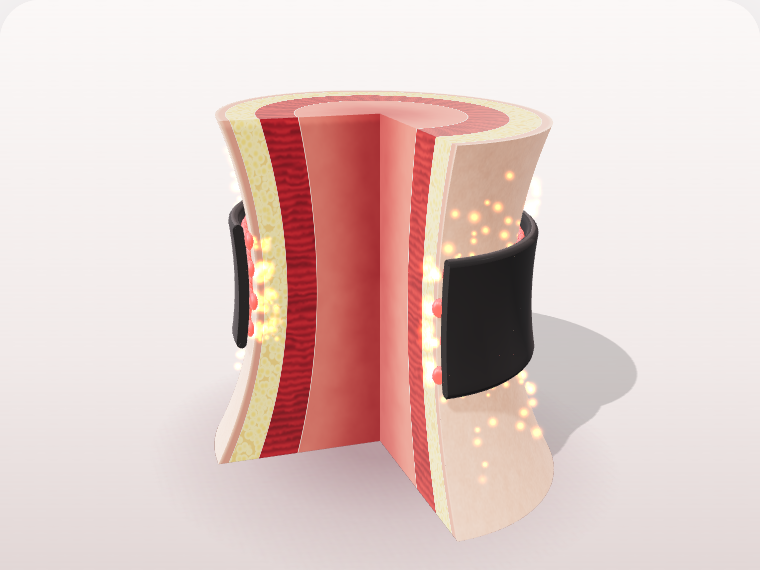
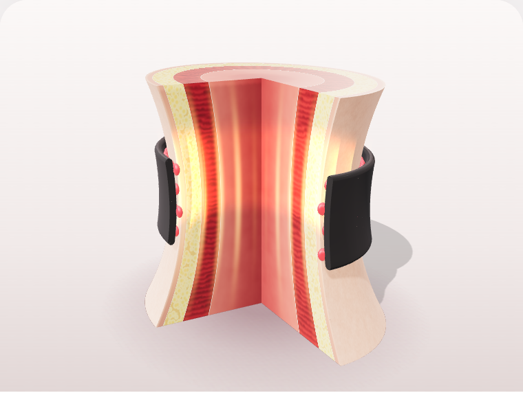
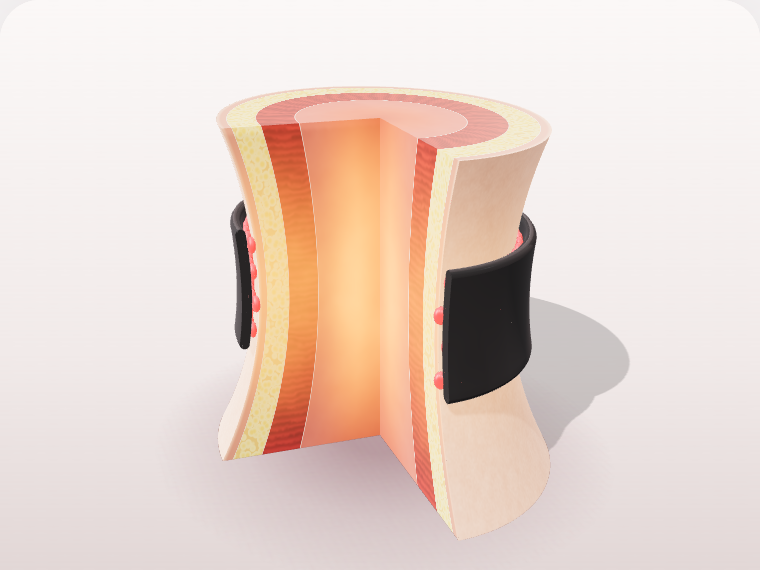

피부지방근육심부
STEP 01
체온 복사
밴드 안쪽 버건디 도트가 맨살에 닿아, 피부의 온기를 받아들입니다.
오직 마이온도에서 확인할 수 있는

밴드 안쪽 버건디 도트가 맨살에 닿아, 피부의 온기를 받아들입니다.

체온을 받은 도트 속 광물 소재가 원적외선과 열에너지를 내보냅니다.

도트에서 나온 원적외선이 피부에 닿아 몸속 깊은 곳까지 온기가 전해지고, 벗은 뒤에도 한동안 남습니다.
약 40여 가지 광물을 융합한 NBT 융복합 기술
* 원리와 지속 시간은 브랜드 설명이며, 체감 시점과 정도는 사람마다 다릅니다. 일러스트는 이해를 돕기 위한 개념도입니다.